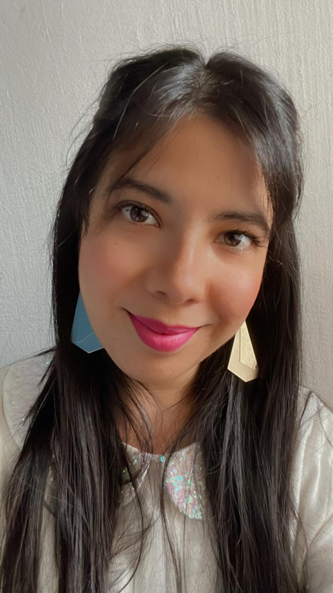

Priscilla Valverde | WDD130
Hi, my name is Priscilla Valverde. I'm from Costa Rica, happily married, and have two boys. I am a Neuro Programmer in Linguistics, which allows me to help people use their brain power to increase connections and learning paths and teach middle and high school. I love tech, especially everything related to STEM, that helps kids and people develop and understand algorithms and logic. I have four sisters, and we love to have fun. I enjoy swimming, reading, and watching kdramas. I can speak in Spanish, Italian(a little bit rusted), Chinese and English. I studied educational psychology, called psychopedagogia; it is about understanding how the brain functions, all the skills related to each part of the brain, and how to create and use tools to develop the skills needed. I love to work with children and youth; I was a seminary teacher for over eight years. I have a black cat as a pet named Meowth as the Pokemon. In addition to my professional interests one of my favorite experiences was learning about the pyramids in Egypt and learning about ancient Egyptian history firsthand. My interest in astronomy often has me gazing at the night sky, identifying constellations, and reading about the latest discoveries in space exploration. Besides that, I actively participate in community service projects, particularly those focused on education and youth development. I believe in lifelong learning and continuously seek out opportunities to expand my knowledge and skills.